Publishing
A Guide to Data Visualizations at BLS
Data visualizations display quantitative information visually.
Visualizations include charts, maps, infographics, and other types of
displays. Readers often understand statistics more easily and quickly
when
they are presented visually.
Good data visualizations achieve the following objectives:
- Present complex data simply
- Work well with general and expert audiences
- Help readers see important points quickly
- Help us communicate more effectively than we can with pages of
text and
detailed tables
- Stimulate curiosity
Most BLS publications use data visualizations, and you can find
plenty of
good examples in each of them.
There are many different types of
data
visualizations, and new ones are created all the time. There are also
many
good guides you can find through a web search about which data
visualizations
are best for particular types of data. This guide isn't intended to
be
exhaustive, but here are brief explanations and examples of the most
common
data visualizations we use at BLS.
Table of Contents
Line Charts
Line charts are used to show data relative to a continuous variable,
usually
time. We use line charts at BLS to show historical series or
projections. Line
charts make it easy for the reader to identify trends.
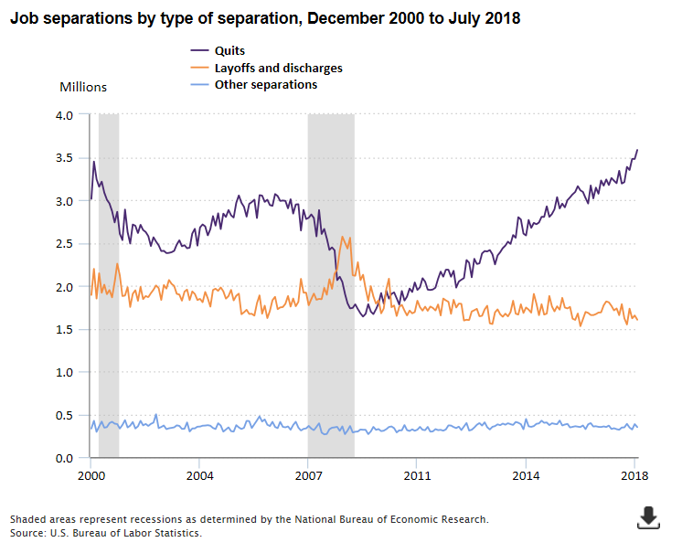
Two-scale Charts
A two-scale line chart or combination line-column chart allows you
to plot
data using two y-axes and a shared x-axis. These charts are often used
to show
a correlation=97or lack of correlation=97between data sets that have
different
units of measurement. Be careful when using two-scale charts because
readers
may find it difficult to determine which dataset corresponds with each
y-axis.
Two-scale charts that have different y-axes also can be misleading if
the
scales are manipulated in a way to make it appear data series are
correlated
when they really are not.
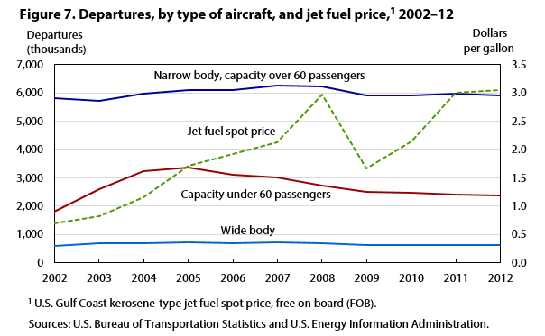
Area Charts
An area chart is similar to a line chart, but the space between the
x-axis
and the line is filled with a color or pattern. It is useful for
showing
part-to-whole relationships, such as the number of unemployed people
by reason
for unemployment. Area charts help you analyze both overall and
individual
trends.
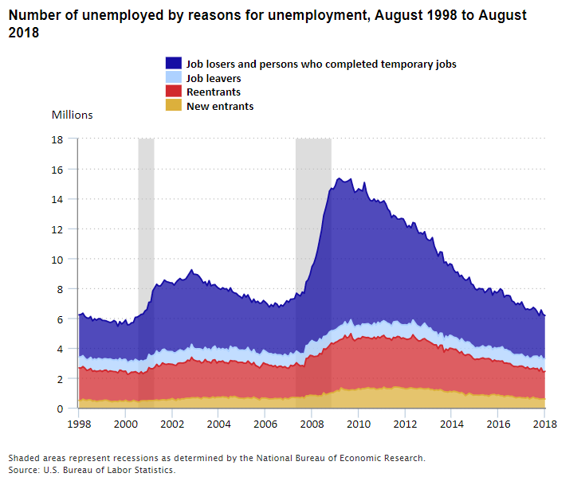
Column charts (also called vertical bar
charts)
Column charts are best for comparing data grouped by discrete
categories.
Column charts are best when you don't have too many groups (fewer
than 8 is
usually good).
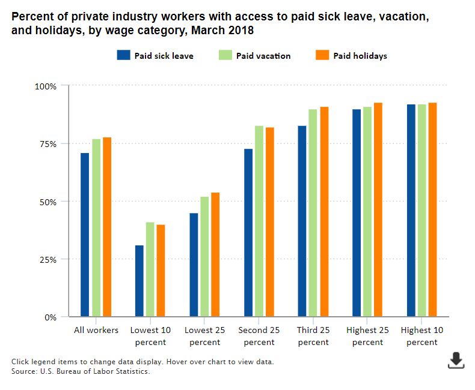<=
/P>
Stacked column charts (also called
stacked
vertical bar charts)
Stacked column charts are a great choice if you not only want to
show the
size of a group relative to other groups, but also illustrate the
parts that
make up the whole group.
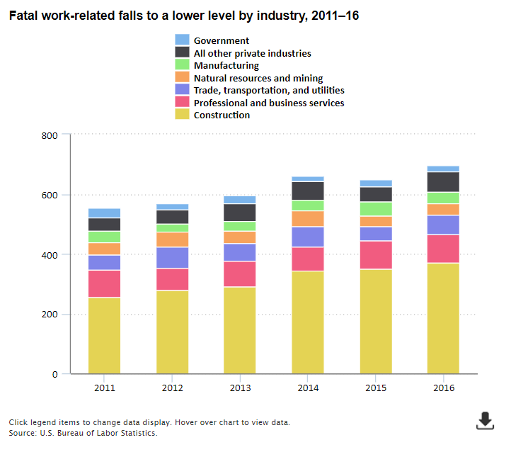
Horizontal bar charts
A horizontal bar chart is similar to a vertical bar chart but is
typically
used when the number of categories is large (greater than 8 or so) or
you have
long labels that you would like to display for each category. It's
much easier
to read the labels when they are displayed in proper orientation.
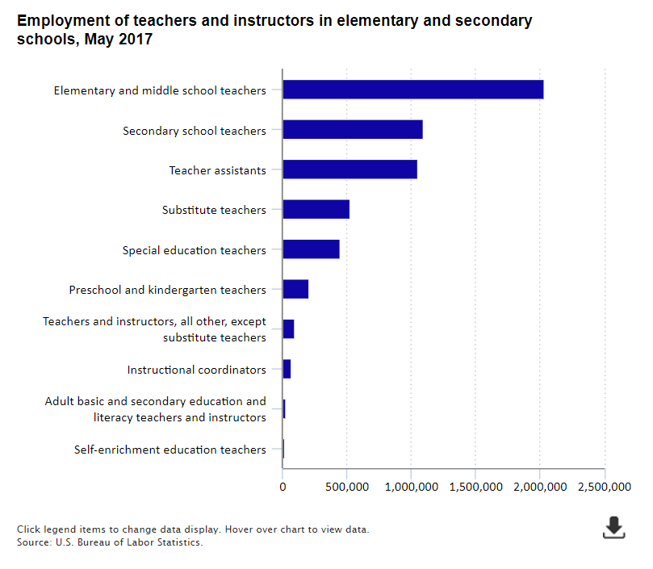
Scatter plots
A scatter plot chart shows the relationship between two different
variables.
If the data points form a band extending from lower left to upper
right, there
is probably a positive correlation between the two variables. If the
band runs
from upper left to lower right, a negative correlation is probable. If
it is
hard to see a pattern, there is probably no correlation.
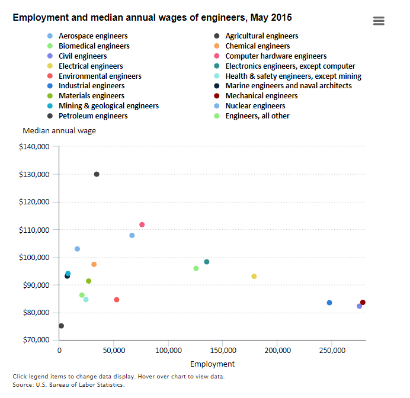
Bubble charts
A bubble chart is similar to a scatter plot, but the size of the
bubble
represents a third variable.
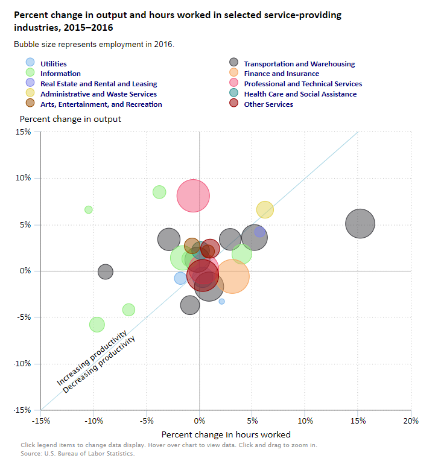
Pie charts
Pie charts are easy to read, and nearly all readers understand them,
so that
makes them an appealing choice to show readers the parts of a whole.
One
disadvantage of pie charts is that they have no scale to make it easy
for
readers to determine values the way they can from the vertical axis on
a
column chart or line chart. Nevertheless, pie charts can be useful for
showing
approximate values. If you have more than four or five categories,
it's usually better not to use a pie chart; a column or bar chart may be
more
appropriate. It's a good practice to order the pieces of the pie
according to
size and always make sure the total of all the pieces adds up to 100
percent.
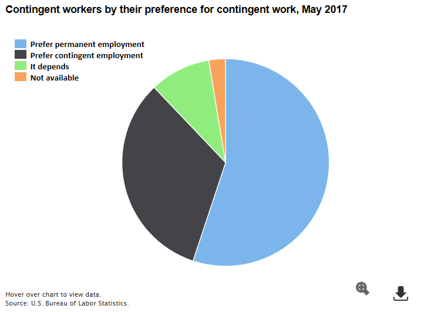
Maps
Maps show geographic relationships or variation in data. At BLS we
commonly
use maps to show data for states, metro areas, and counties.
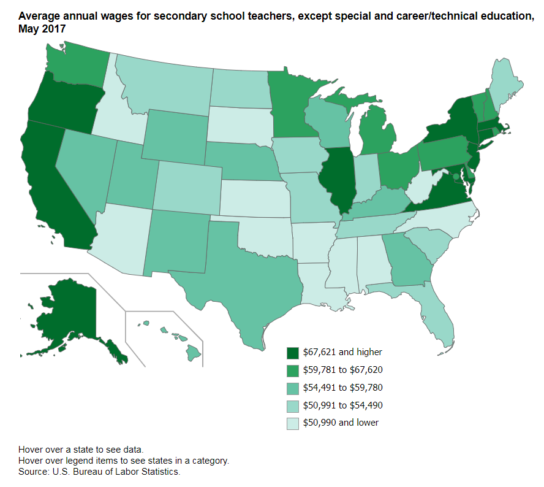
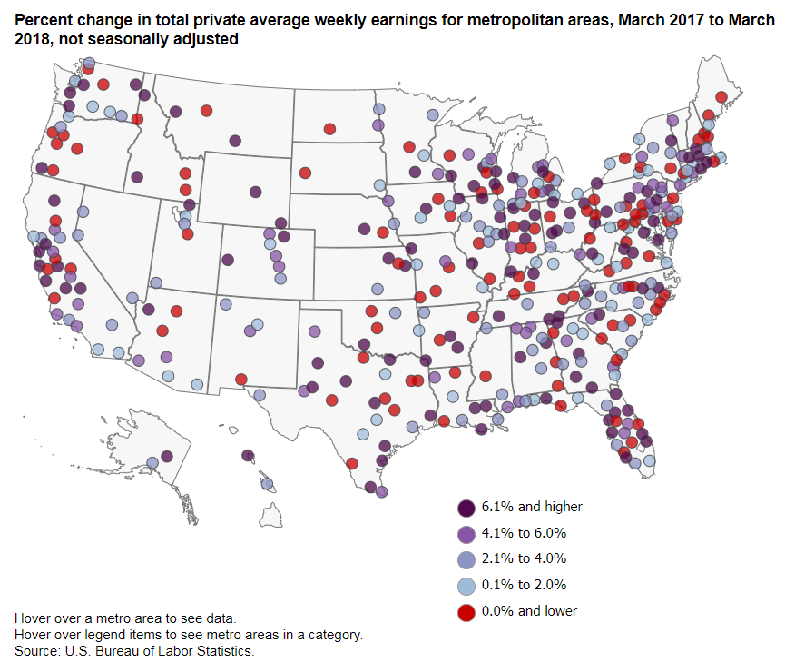
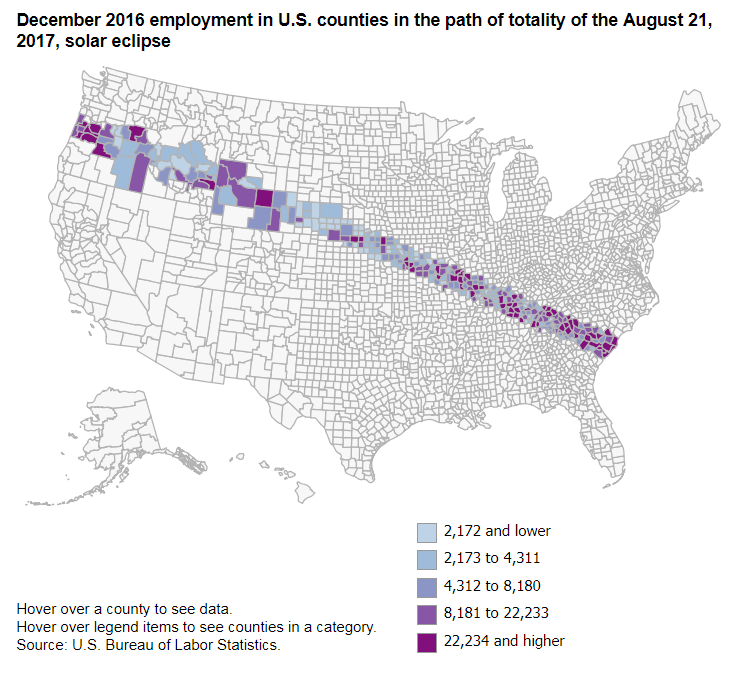
There are many good software tools for creating data visualizations.
This
guide does not focus on how to use any specific software but instead
presents
good practices for making effective visualizations.
These guidelines apply to static, interactive, or animated data
visualizations. In some places, we discuss how interactivity or
animation can
improve a data visualization.
Keys for effective
data
visualizations
Know your audience. Simpler data visualizations are
usually
better for any audience, but an expert audience may understand more
complex
visualizations. As with any type of communication, know your
audience.
Make data visualizations a central feature of your
storytelling.
You may find it helpful to create your data visualizations
before you begin writing, to help you see the interesting data
patterns you want to write about.
Choose the right data visualization to help you tell your
story. Would a map explain a point more clearly than a chart?
Would a
stacked column chart be better than a pie chart? Not sure how to
choose? The
staff in the Office of
Publications can
help.
A data visualization must be able to stand alone.
Data
visualizations often complement the text, but a visualization also
must be
understandable apart from the text that accompanies it.
Guidelines
for
specific parts of data visualizations
Chart and Map Titles
- Each graphic should have a title that briefly describes the data
in the
chart or map.
- The title should be at the top of the graphic and no more than two
lines
long.
- Graphics may have titles that are purely descriptive, or they may
present
analytical results. Compare these two examples:
- Descriptive title: "Selected percentiles of usual weekly
earnings of
full-time wage and salary workers age 16 and older, in 2017
dollars,
1979"
- Analytical title: "Real earnings increased for the highest
earners
since 1979 but are unchanged for the lowest
earners"
Most BLS publications use descriptive titles, but there is nothing
wrong
with using analytical titles. As always, the choice about which style
to use
depends on the audience. The editors in the Office of Publications can
help
you decide. The BLS publication Spotlight on Statistics uses both styles together.
The chart
titles typically use the descriptive style, but each slide in
Spotlight also
includes a headline that is analytical.
Legends
- Legends should appear in the same order and direction as the data.
This
arrangement sometimes is not possible for line charts in which the
lines
cross one another. The arrangement is helpful for bar and column
charts and
line charts in which the lines do not cross. See the examples
below.
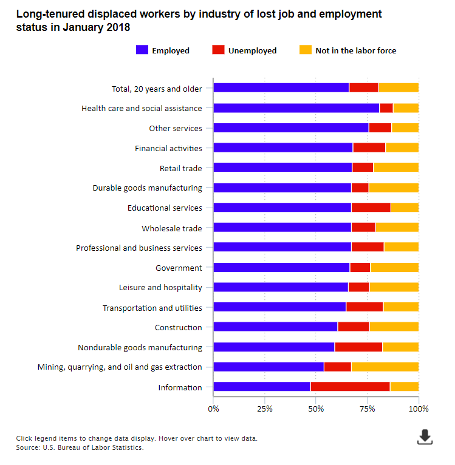
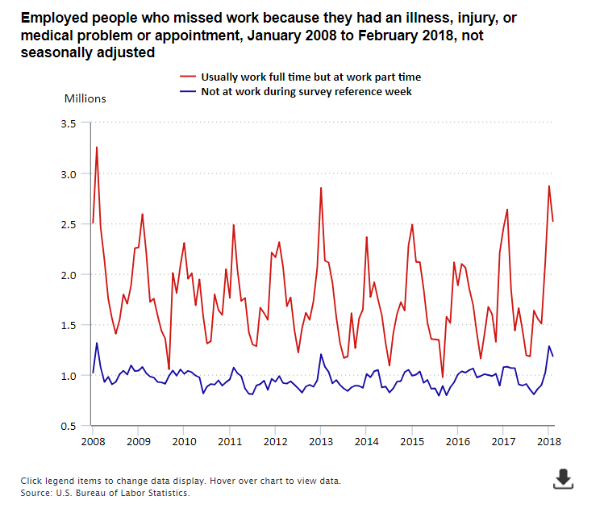
Gridlines
- Use gridlines to help guide the reader's eye, but don't make
them too
intrusive. You want readers to focus on the data, not the
gridlines.
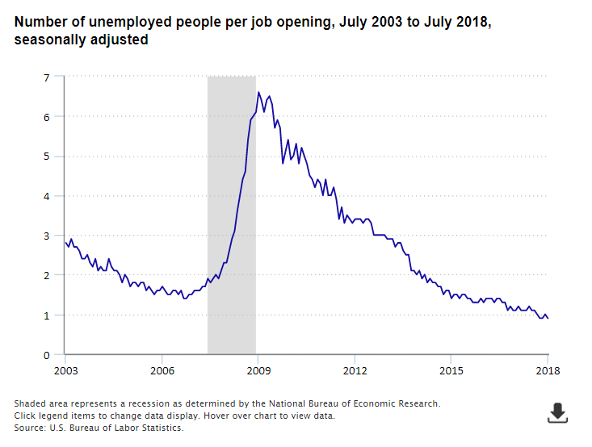
<=
/UL>
Notes and Sources
- Notes, located at the bottom of the chart, should be brief and
should
provide information to help the reader understand how the interactive
features work or what recession shading or similar features
mean.
- Avoid including detailed technical explanations about the data in
a
chart. Such explanations often distract readers from the main point
of the
chart. Find another place in the publication to explain technical
information.
- A typical note on a BLS chart might say, "Shaded areas represent
recessions as determined by the National Bureau of Economic Research.
Click
legend items to change data display. Hover over chart to view
data."
- All data visualizations should include a source note that credits
the
data to BLS or another source. The source note is the last item in
the
graphic. If the visualization shows BLS data, always show "Source:
U.S.
Bureau of Labor Statistics." Avoid citing the specific BLS program,
however,
because doing so clutters the visualization and does not provide
information
that is meaningful to most readers.
Axis Titles
- Axis titles may not be necessary if the chart title is clear
about the
unit of measurement. Axis titles also may not be necessary if other
information makes it clear the axis shows dollar amounts,
percentages, dates,
and so forth. If an axis title is needed, be brief. In the chart
below,
there are no axis titles. The % next to the numbers in the
vertical axis
labels eliminate the need for an axis title that says
Percent. On the
horizontal axis, the labels clearly show years, so an axis title is
not
needed.
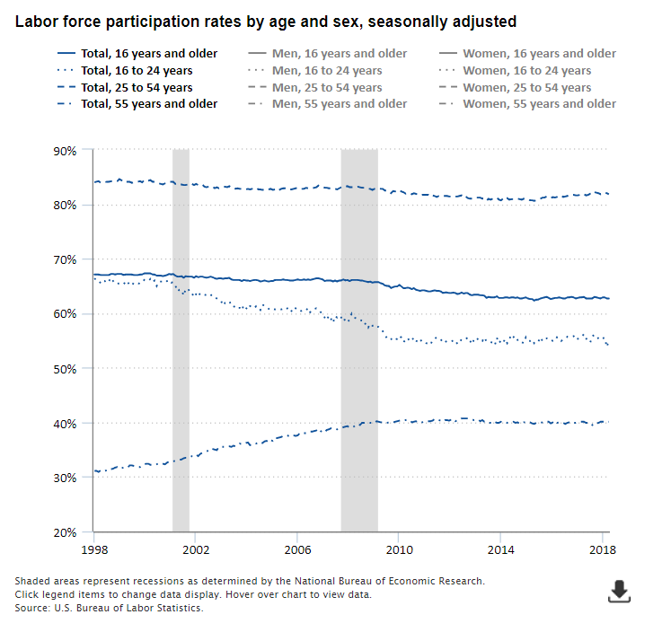
- The title for the vertical axis should be at the top of the axis
and
should always be centered and appear horizontally over the axis.
- The title for the horizontal axis is centered horizontally under
the
axis.
- Scatter plots and bubble charts nearly always need to have axis
titles to
make it clear which measure appears on each axis.
Time Periods
- Charts and maps should always be clear about the time period
covered by
the data. In line charts that show time series, the time period
usually is
clear from looking at the horizontal axis. In that case, the chart
title
doesn't also need to state the time period.
- The horizontal axis doesn't need a label at every month,
quarter, or
year. The axis should have labels the beginning and ending period,
but not
necessarily everything in between. Readers can figure out the label
patterns
pretty easily, such as every 12 months, 5 years, and so forth.
Labeling only
some periods between the beginning and the end reduces clutter and
makes it
easier for readers to focus on more important points of the data
story.
- Even if the chart shows monthly data, it is acceptable for the
horizontal
axis labels to show only years. The tooltips in interactive graphics make the
specific month
clear.
- Maps, bar and column charts, bubble charts, scatter plots, and
most other
types of charts other than line charts typically need to state the
time
period in the title.
Scale
- Most charts have a scale that begins at zero, but sometimes it is
better
to zoom in on a limited range of data.
- Line charts do not necessarily have to start at zero. It all
depends on
the range of the values. For example, the civilian labor force
participation rate has drifted downward since reaching a peak in
the late
1990s and early 2000s. A chart showing the range of values from 62 percent
to 68
percent shows the decline clearly. If the chart scale went from
zero to
100 percent, the line would be flatter. That hides the
variation and
the interesting story and arguably misleads readers.
- For bar and column charts, the scale must
always start
at zero because the relative size of the bars is important for
scaling.
Starting at anything other than zero distorts the scaling. For
example,
see the charts below showing employment in the fictional
occupation
drone dispatchers. If there were 100 drone dispatchers employed
in year
1 and 110 employed in year 2, the increase would be 10 percent.
If the
scale of a column chart began at 90 instead of zero, that would
make
the year 2 column (90 to 110) twice as tall as the year 1
column (90 to
100). That would mislead readers into thinking the increase was
100
percent instead of 10 percent.
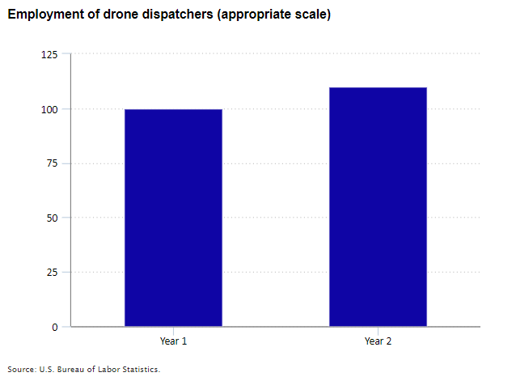
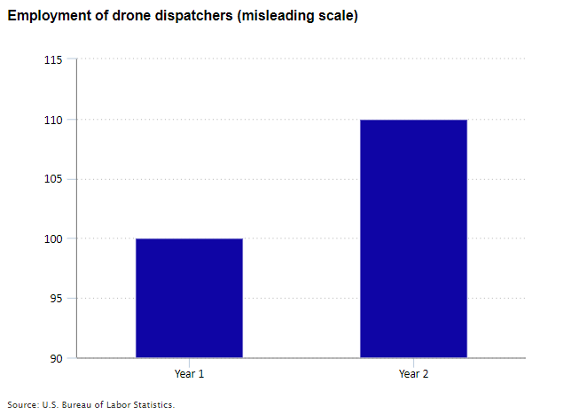
- Most interactive graphics have a scale that adjusts
automatically
depending on the data values. For bar and column charts, the scale
always
begins at zero, and the maximum depends on the highest value. For
line
charts and other charts, the minimum and maximum vary with the data
values
shown.
- If you have a series of similar graphics in a publication, it is
probably best for each graphic to use the same scaling.
- A short Quartz article elaborates on the topic of
scaling.
- Interactive graphics include tooltips=97pop-up text boxes that
show data
values when the reader hovers over the appropriate area of the chart.
Tooltips can enhance data visualizations by providing readers with
quick
access to information about specific data points. The software BLS
uses to
create interactive graphics automatically creates the tooltips based
on data
displayed in the chart.
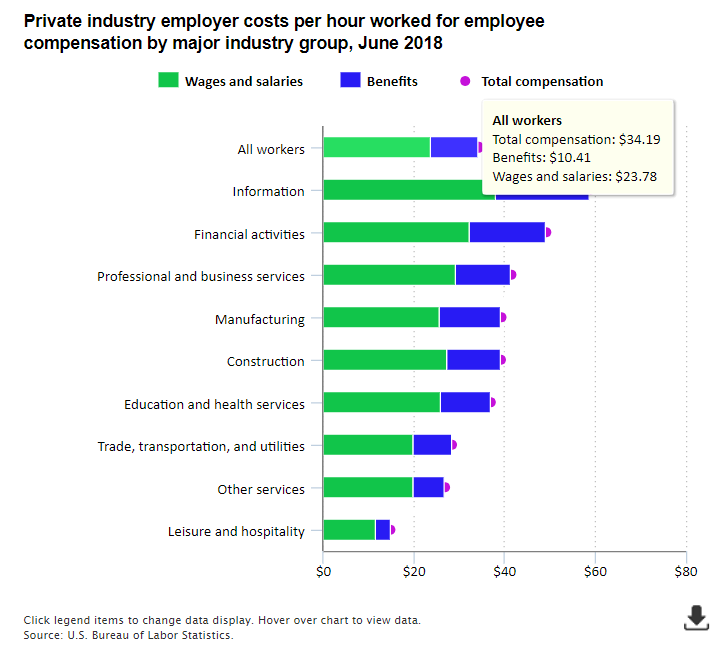
- As with other aspects of data visualizations, tooltips should
be
concise.
- Tooltips can display extra information not shown in the data
visualization, but that extra information should relate directly to
the
data displayed in the visualization. For example, a map that shows
the
percent change in employment in each state over the year might have
a
tooltip that shows the percent change, the change in the employment
level,
the most recent employment level, and the employment level a
year
earlier.
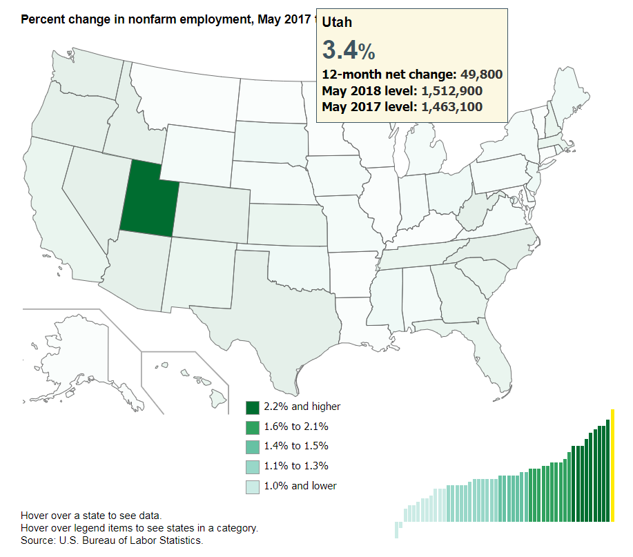
- Tooltips generally should not include extra data that are not
used to
derive the measures shown in the data visualization. For example,
a chart
showing employment changes in large counties should not show
wage
levels in those counties if the wage levels are not shown in
the
chart.
Some Do's and
Don'ts in data
visualizations
Use sorting to help tell
the
story
- You might sort data differently in a chart than you would in a
table. For
example, BLS tables typically show industries based on the NAICS
hierarchy.
If you want to show readers which industries had the highest and
lowest job
growth, it would be more effective to sort the industries based on
job
growth.
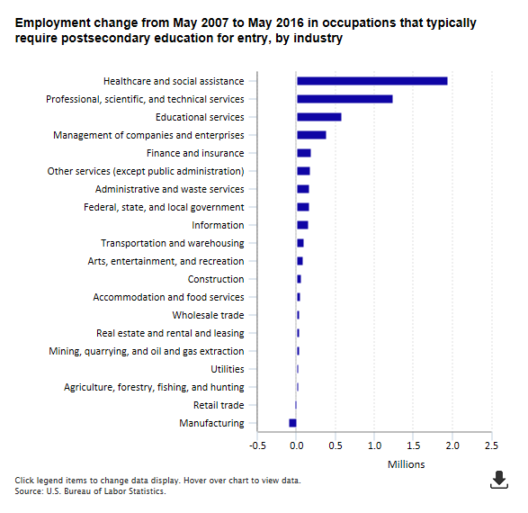
Color choices matter
- Use colors that are easy to distinguish from one another.
- When choosing colors, be mindful of readers with color vision
deficiency (CVD), commonly called color blindness. There are a
number of
good resources to help you use colors and patterns that readers
with CVD
can see well, including these from http://www.color-blindness.com/2007/06/02/how-to-color-=
charts-respecting-color-blindness/
and Tableau.
- Consider using color in combination with texture in logical
ways to
help readers understand data groups. The JOLTS news release chart package has good
examples of
this technique.
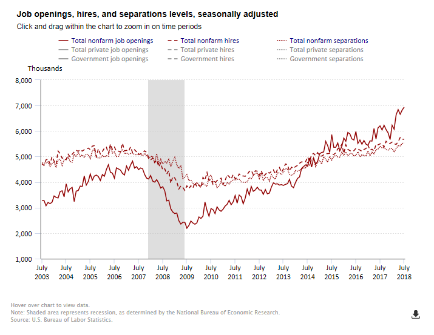
- Use color palettes that help readers understand logical groups.
For
example, in a chart showing different types of employee benefits,
you might
group insurance benefits with one color and use different
colors for
retirement benefits, paid time off, and bonuses.
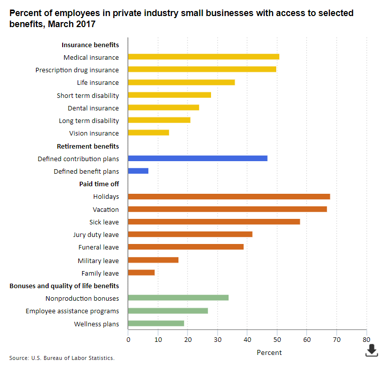
- Use color palettes that help readers understand data ranges.
For
example, a map showing unemployment rates in each state
may show
all states in blue, with lighter blue for states with lower rates
and
darker blue for states with higher rates.
- Don't use colors that perpetuate stereotypes, such as a blue
line
showing men's earnings and a pink line showing women's
earnings.
- Use the same color for a series that is included in other
charts
within the same publication.
Avoid clutter and wordiness
- If at first glance the reader can't tell what the story is,
there's
probably too much happening in the chart.
- Axis titles may not be necessary if the chart title is clear or
other
information from the axis makes it clear that the axis shows
dollar
amounts, percentages, dates, and so forth. If an axis title is
needed, be
brief.
- Series names in legends and labels can be challenging because of
the
sometimes wordy industry, occupation, and other titles we use at
BLS. We
need to be accurate about what a series represents, but if a title
is too
wordy, consider ways to shorten it to improve reader
understanding.
Avoid using abbreviations that may shorten a title but may
confuse
readers about the meaning.
- Notes should be brief and should provide information to help
the reader
understand how the interactive features work or what recession
shading
or other features mean. It is usually best to exclude detailed
technical explanations about the data in a chart.
Limit the use
of data
labels in the chart area
- Remember it's a chart, not a table. Get rid of those data labels
in the
chart area. This tip is a corollary to the one above about avoiding
clutter.
- All BLS charts and maps have a link to a table with the underlying
data.
- This is an effective way to provide readers with specific data
values
without cluttering the chart with data labels.
- All visualizations must link to a properly formatted
HTML table
with the underlying data to comply with federal laws on making
our data
and services accessible to people with disabilities. Tables
made using
BLS table wizards meet this requirement.
- In interactive graphics, tooltips show data values when the
reader hovers
over the appropriate area of the chart.
Avoid redundancy
- If the time period in a line chart is clear from looking at the
horizontal axis, the title doesn't need to state the time
period.
- If the chart title says "Percent of workers who", the
vertical axis
doesn't need a title that says "Percent."
Don't make readers
tilt
their heads to read
- Slanted or vertical writing in axis titles or labels slows
readers down
and distracts them from focusing on the parts of the chart that are
probably
more important to the story you want to tell. If you have to slant
axis
labels and write axis titles vertically, it's a sign that your
labels and
titles are too wordy and you are trying to pack too much information
into a
limited space. Refer to the tips above about clutter, wordiness, and
redundancy.
Don't use 3D.
- 3D features can often distort data and lead to wrong
conclusions.
- The third dimension in a 3D graphic usually does not provide
useful
information. If it doesn't, it will confuse readers.
- Besides 3D, other unnecessary and possibly misleading features
include
beveling or shading effects in bars/columns.
Don't make readers do math.
- If you expect readers to make calculations in their head to
understand
the point of a chart, you probably should choose a different chart
type or
show different data.
Static
versus Interactive and Animated Data Visualizations
Throughout our history, BLS has created static charts and maps to
present
data visually. We still publish static data visualizations, but our
visualizations increasingly include interactive features.
Highcharts is the software we use at BLS to make interactive and
animated
visualizations that are compatible with our web publishing platform.
The
Office of Publications has created applications for creating
visualizations
using Highcharts, and anyone in BLS can use them. We start with a table wizard in which we can easily copy data
from a
spreadsheet to make an HTML table that is suitable for publishing. The
table
wizard links to the Chart Maker tool, which lets us create high
quality
interactive or animated visualizations in minutes. The Chart Maker
tool
provides many options for types of data visualizations and their
features. The
tool provides a template for making good data visualizations and helps
us
avoid common mistakes. Although the tool is designed for making
interactive
and animated visualizations, you can also use it to make high quality
static
visualizations.
Interactive features provide readers with more
information
than they can get from a static image. For example, see an interactive map showing state unemployment rates.
When you
hover over each state, more information pops up to show the state's
unemployment rate in the most recent month, the rate a year earlier,
and the
change over the year. When you hover over the items in the map legend,
the
states in each category light up more brightly to help you see the
states with
similar unemployment rates.
Interactive features in charts and maps also give readers the power
to
choose what information they want to see. Here are some examples:
Animated features take interactivity one step
further by
helping readers see how measures change over time. The map we
discussed above
shows state unemployment rates for a single month. An animated version
of that
map shows how state unemployment rates changed each month over a
10-year
period.
Interactive features and animation can enhance data visualizations,
but we
should avoid relying only on interactivity or animation to tell a data
story.
All charts and maps should provide readers with useful information as
a static
image. Interactivity or animation complements a good static image but
does not
substitute for it.
Where to get help
If you need help with any aspect of data visualizations, please
contact the
Division of New Media in the Office of Publications at newmedia@bls.gov.